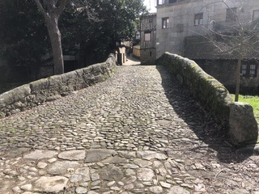

Vista lateral: El puente tiene un único arco de medio punto, típico de la Edad Media.

Entorno natural: Cruza el río Canderuelo rodeado de vegetación. Más info

Entorno natural: Siglos de historia que las piedras desgastadas susurran al cruzar. Más info
🔍 Encuentra el símbolo oculto
Observa la imagen y toca el arco central del puente.
Fragmento del Mensaje: escudo
QR en el pueblo: PUENTE-1400
Dato Curioso: Este puente resistió una gran crecida del río Canderuelo en 1650.